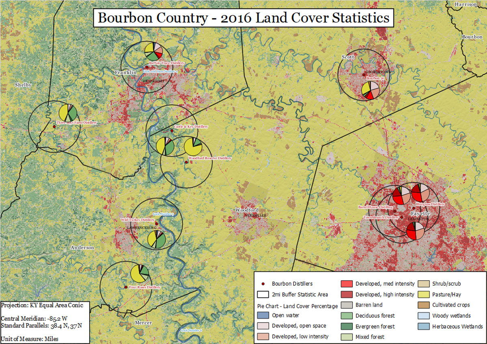
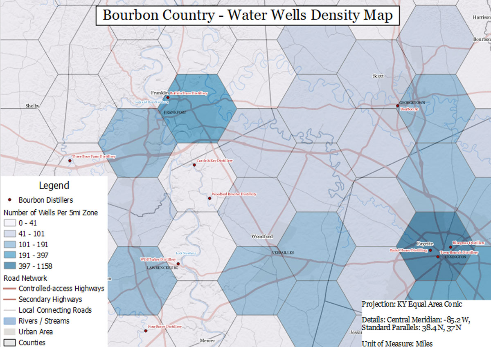

Gregory P. Madden
Cartographic Design


About This Project
Kentucky is known for three things globally: its horses, its chicken, and its bourbon. These maps show the proximity of bourbon distillaries and their surrounding land cover and natural water sources.